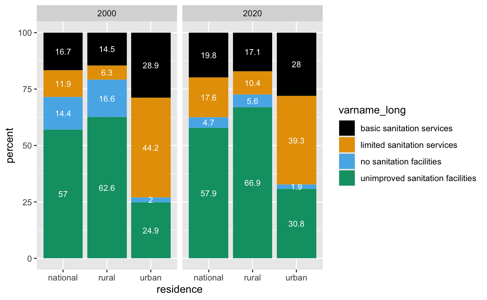
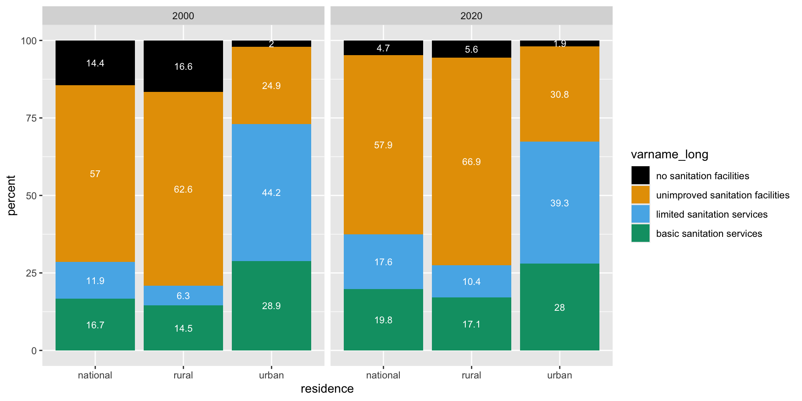
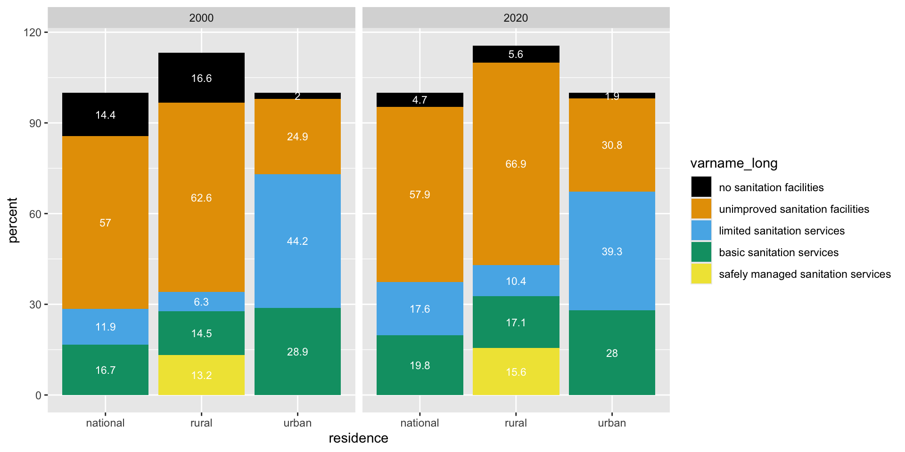
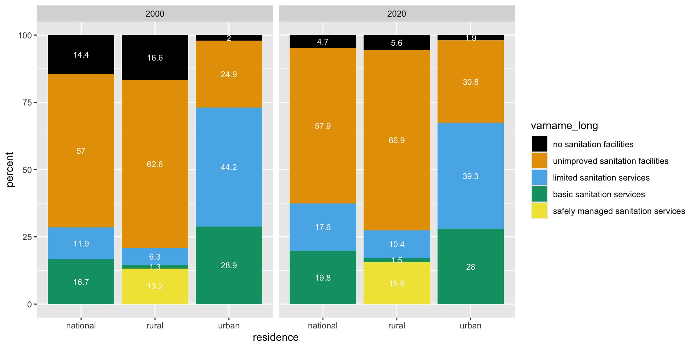
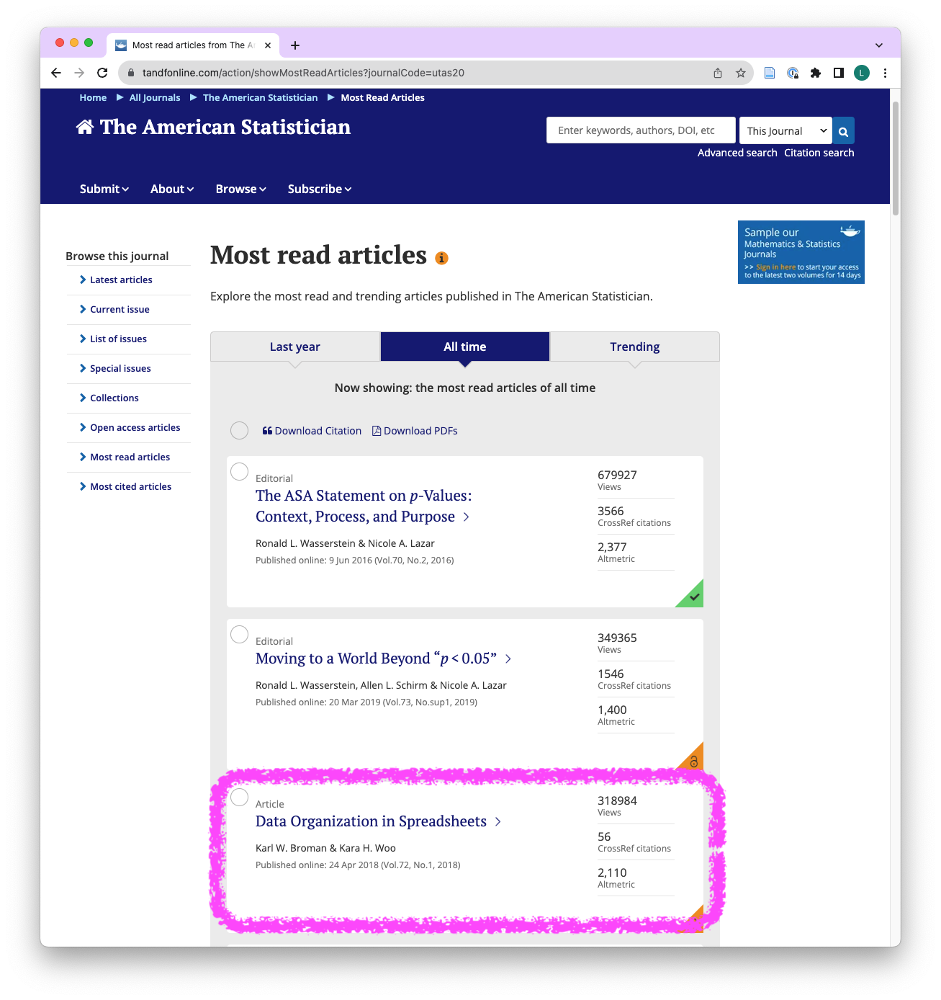
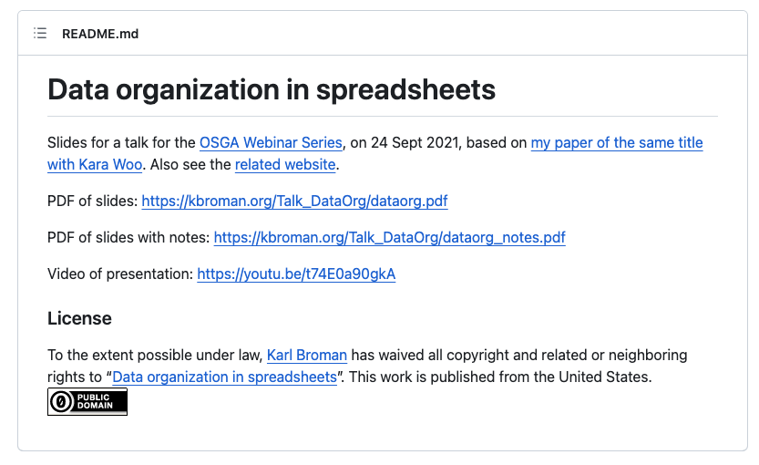

- Learners can import data from files in CSV and XLSX format located in sub-directories of the root directory.
- Learners can explain the difference between the vector class character and the vector class factor.
- Learners can discuss the difference between unprocessed raw data, processed analysis-ready data, and data underlying a publication.
- Learners can apply 12 principles for data organisation in spreadsheets to the layout of a provided dataset.
Data import & Data organization in spreadsheets
ds4owd - data science for openwashdata
Lars Schöbitz
ETH Zurich
Oct 2, 2025
Learning Objectives (for this week)
Homework module 3
Task 3: Data for a country of your choice
- for the country you live or work in
- for the year 2000 and 2020
- for all variables that are not “safely managed sanitation services”
Task 3: Data for a country of your choice
Task 3: Data for a country of your choice
Task 3: Data for a country of your choice
- for the country you live or work in
- for the year 2000 and 2020
- for all variables that are not “safely managed sanitation services”
| iso3 | year | varname_short | n |
|---|---|---|---|
| UGA | 2000 | san_bas | 3 |
| UGA | 2000 | san_lim | 3 |
| UGA | 2000 | san_od | 3 |
| UGA | 2000 | san_unimp | 3 |
| UGA | 2020 | san_bas | 3 |
| UGA | 2020 | san_lim | 3 |
| UGA | 2020 | san_od | 3 |
| UGA | 2020 | san_unimp | 3 |
Task 3: Data for a country of your choice
- for the country you live or work in
- for the year 2000 and 2020
- for all variables that are not “safely managed sanitation services”
| iso3 | year | varname_short | n |
|---|
# A tibble: 0 × 4
# ℹ 4 variables: iso3 <chr>, year <dbl>, varname_short <chr>, n <int>- One row cannot have two values (2000 and 2020) for the same variable
- One year cannot 2000 & 2020 at the same time
- One year is either 2000 or 2020
Task 5 & 6: Make a plot & inspect it
- Look at the plot that you created. What do you notice about the order of the bars / order of the legend?
- What would you want to change?
- Why did we remove “safely managed sanitation services” from the data set in Task 3?

Task 5 & 6: Make a plot & inspect it
- Look at the plot that you created. What do you notice about the order of the bars / order of the legend? alphabetical order
- What would you want to change? put in order of the “sanitation ladder”
- Why did we remove “safely managed sanitation services” from the data set in Task 3?

Task 5 & 6: Make a plot & inspect it
- Look at the plot that you created. What do you notice about the order of the bars / order of the legend? alphabetical order
- What would you want to change? put in order of the “sanitation ladder”
- Why did we remove “safely managed sanitation services” from the data set in Task 3?

Sanitation ladder?
| varname_short | varname_long | simplified |
|---|---|---|
| san_sm | safely managed sanitation services | a decent toilet that's not shared, and where pee & poo safely moved & treated |
| san_bas | basic sanitation services (improved sanitation facilities which are not shared) | a decent toilet that's not shared |
| san_lim | limited sanitation services (improved sanitation facilities which are shared) | a decent toilet that's shared |
| san_unimp | unimproved sanitation facilities | an inadequate toilet |
| san_od | no sanitation facilities (open defecation) | no toilet |
Task 5 & 6: Make a plot & inspect it
- Look at the plot that you created. What do you notice about the order of the bars / order of the legend? alphabetical order
- What would you want to change? put in order of the “sanitation ladder”
- Why did we remove “safely managed sanitation services” from the data set in Task 3?

Task 5 & 6: Make a plot & inspect it
- Look at the plot that you created. What do you notice about the order of the bars / order of the legend? alphabetical order
- What would you want to change? put in order of the “sanitation ladder”
- Why did we remove “safely managed sanitation services” from the data set in Task 3? because the total adds up to greater 100%, a fraction of people with basic services have safely managed services

Task 5 & 6: Make a plot & inspect it
- Look at the plot that you created. What do you notice about the order of the bars / order of the legend? alphabetical order
- What would you want to change? put in order of the “sanitation ladder”
- Why did we remove “safely managed sanitation services” from the data set in Task 3? because the total adds up to greater 100%, a fraction of people with basic services have safely managed services

Types of variables - Remember?
numerical
discrete variables
- non-negative
- whole numbers
- e.g. number of students, roll of a dice
continuous variables
- infinite number of values
- also dates and times
- e.g. length, weight, size
non-numerical
categorical variables
- finite number of values
- distinct groups (e.g. EU countries, continents)
- ordinal if levels have natural ordering (e.g. week days, school grades)
Factors in R
My turn: Factors in R
Sit back and enjoy!
Take a break
Please get up and move! Let your emails rest in peace.
10:00
Image generated with DALL-E 3 by OpenAI
Your turn: md-04-exercises
- Open posit.cloud/spaces/663318/content in your browser.
- Verify that the ds4owd workspace is open.
- Click Start next to md-04-exercises.
- In the File Manager in the bottom right window, locate the
md-04a-factors-your-turn.qmdfile and click on it to open it in the top left window.
25:00
Data import
Reading rectangular data into R

CSV & XLSX
readr
read_csv()- comma delimited filesread_csv2()- semicolon separated files (common in countries where , is used as the decimal place)read_tsv()- tab delimited filesread_delim()- reads in files with any delimiter- …
readxl
read_excel()- read xls or xlsx files- …
Reading data from CSV files
- import unprocessed raw data
# A tibble: 367 × 113
iso3c region_id country_name income_id city_name additional_data_annu…¹
<chr> <chr> <chr> <chr> <chr> <chr>
1 AFG SAS Afghanistan LIC Jalalabad <NA>
2 AFG SAS Afghanistan LIC Kandahar <NA>
3 AFG SAS Afghanistan LIC Mazar-E-… <NA>
4 AFG SAS Afghanistan LIC Kabul <NA>
5 AFG SAS Afghanistan LIC Hirat <NA>
6 AGO SSF Angola LMC Luanda <NA>
7 ALB ECS Albania UMC Korca <NA>
8 ALB ECS Albania UMC Vlora <NA>
9 ARE MEA United Arab Emira… HIC Abu Dhabi <NA>
10 ARE MEA United Arab Emira… HIC Dubai <NA>
# ℹ 357 more rows
# ℹ abbreviated name: ¹additional_data_annual_budget_for_waste_management_year
# ℹ 107 more variables: additional_data_annual_solid_waste_budget_year <chr>,
# additional_data_annual_swm_budget_2017_year <dbl>,
# additional_data_annual_swm_budget_year <dbl>,
# additional_data_annual_waste_budget_year <dbl>,
# additional_data_collection_ton <dbl>, …Writing data as CSV files
- transform data
- export processed analysis-ready data
# data transformation
waste_sml <- waste |>
select(country_name, city_name, iso3c, income_id,
total_msw_total_msw_generated_tons_year,
population_population_number_of_people) |>
rename(country = country_name,
city = city_name,
generation_tons_year = total_msw_total_msw_generated_tons_year,
population = population_population_number_of_people)
# export processed analysis-ready data
write_csv(waste_sml, "data/processed/waste-city-level-sml.csv")Reading data from XLSX files
- import unprocessed raw data
# A tibble: 20 × 6
id date_sample system location users ts
<dbl> <dttm> <chr> <chr> <dbl> <dbl>
1 1 2023-11-01 00:00:00 pit latrine household 5 136.
2 2 2023-11-01 00:00:00 pit latrine household 7 102.
3 3 2023-11-01 00:00:00 pit latrine household NA 57.0
4 4 2023-11-01 00:00:00 pit latrine household 6 27.0
5 5 2023-11-01 00:00:00 pit latrine household 12 97.3
6 6 2023-11-02 00:00:00 septic tank household 7 78.2
7 7 2023-11-02 00:00:00 septic tank household 14 15.2
8 8 2023-11-02 00:00:00 septic tank household 4 29.4
9 9 2023-11-02 00:00:00 septic tank household 10 64.2
10 10 2023-11-02 00:00:00 septic tank household 12 8.01
11 11 2023-11-03 00:00:00 pit latrine public toilet 50 11.2
12 12 2023-11-03 00:00:00 pit latrine public toilet 32 84.0
13 13 2023-11-03 00:00:00 pit latrine public toilet 41 55.9
14 14 2023-11-03 00:00:00 pit latrine public toilet 160 15.3
15 15 2023-11-03 00:00:00 pit latrine public toilet 20 22.6
16 16 2023-11-04 00:00:00 septic tank public toilet 26 8.72
17 17 2023-11-04 00:00:00 septic tank public toilet 91 43.9
18 18 2023-11-04 00:00:00 septic tank public toilet 68 10.4
19 19 2023-11-04 00:00:00 septic tank public toilet 112 23.2
20 20 2023-11-04 00:00:00 septic tank public toilet 59 15.6 Writing data as CSV files
- transform data
- export data underlying a publication
# data transformation
tbl_sludge_summary <- sludge |>
filter(!is.na(users)) |>
group_by(system, location) |>
summarise(
count = n(),
mean_ts = mean(ts),
sd_ts = sd(ts),
median_ts = median(ts)
)
# export data underlying a publication
write_csv(tbl_sludge_summary, "data/final/tbl-01-faecal-sludge-summary.csv")| system | location | count | mean_ts | sd_ts | median_ts |
|---|---|---|---|---|---|
| pit latrine | household | 4 | 90.7 | 45.9 | 99.9 |
| pit latrine | public toilet | 5 | 37.8 | 31.3 | 22.6 |
| septic tank | household | 5 | 39.0 | 30.8 | 29.4 |
| septic tank | public toilet | 5 | 20.4 | 14.3 | 15.6 |
(Research) Data Management
| term | folder | explanation | file format |
|---|---|---|---|
| unprocessed raw data | raw | data that is not processed and remains in its original form and file | often XLSX, also CSV and others |
| processed analysis-ready data | processed | data that is processed to prepare for an analysis and is exported in its new form as a new file | CSV |
| final data underlying a publication | final | data that is the result of an analysis (e.g descriptive statistics or data visualization) and shown in a report, but then also exported in its new form as a new file | CSV |
Take a break
Please get up and move! Let your emails rest in peace.
10:00
Image generated with DALL-E 3 by OpenAI
My turn: Import data from XLSX
Sit back and enjoy!
Your turn: md-04-exercises
- Open posit.cloud/spaces/663318/content in your browser.
- Verify that the ds4owd workspace is open.
- Click Start next to md-04-exercises.
- In the File Manager in the bottom right window, locate the
md-04b-import-your-turn.qmdfile and click on it to open it in the top left window.
20:00
Data Organization in Spreadsheets
Data Organization in Spreadsheets

Data Organization in Spreadsheets
Read the paper (it’s part of your homework), but you can also:
- Go through the annotated slides: https://kbroman.org/Talk_DataOrg/dataorg_notes.pdf
- Watch Karl Broman give the talk (02:36 to 45:00): https://youtu.be/t74E0a90gkA?t=156
- Read the content on a website: https://kbroman.org/dataorg/
Data Organization in Spreadsheets
But, especially apply it to your data
Data Organization in Spreadsheets
Why? Because following a set of rules for organizing data everyone’s live a little better.

- 3rd most viewed paper on The American Statistician
- 310’000+ views
- widely accepted as minimal standards
Journal: The American Statistician, Screenshot taken on 2025-10-02
Data Organization in Spreadsheets
License? CC0 (!)

Homework assignments module 4
Module 4 documentation
Homework due date
- Homework assignment due: Monday, October 6th 2025
Wrap-up
Thanks! 🌻
Slides created via revealjs and Quarto: https://quarto.org/docs/presentations/revealjs/
Access slides as PDF on GitHub